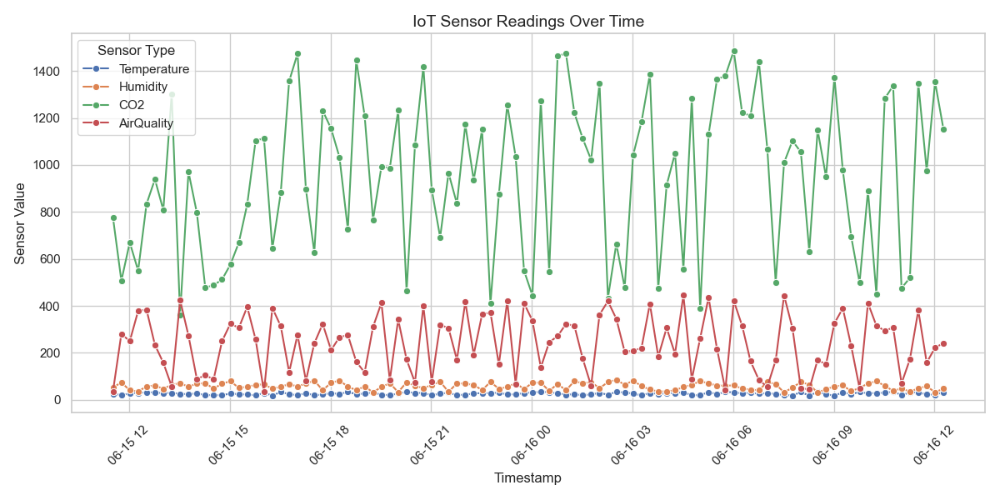

Time-Series Data Visualization & Analysis
A comprehensive analysis of IoT sensor data collected over 25+ hours, visualizing temperature, humidity, CO2, and air quality measurements to identify trends, patterns, and actionable insights.
Data Collection & Monitoring Setup
IoT Sensor Readings Over Time

Key Environmental Indicators
Environmental Comfort Indicators
Insights & Recommendations